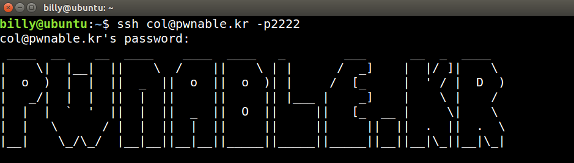
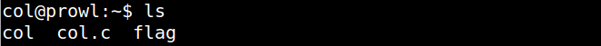
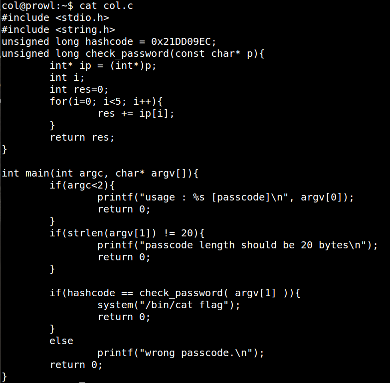
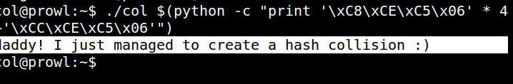

还是一样打开网站，链接服务器（此部分省略）

查看服务器里有什么？

查看源代码

涉及到的知识点:
1.指针类型转换
2.大小端序
3.字符串转换ASCII码
知识点1：指针类型转换
当我们初始化一个指针或给一个指针赋值时，赋值号的左边是一个指针，赋值号的右边是一个指针表达式。在我们前面所举的例子中，绝大多数情况下，指针的类型和指针表达式的类型是一样的，指针所指向的类型和指针表达式所指向的类型是一样的。
1 | float f=12.3; |
在上面的例子中，假如我们想让指针p 指向实数f，应该怎么办？
是用下面的语句吗？
p=&f;
不对。因为指针p 的类型是int *，它指向的类型是int。表达式&f 的结果是一个指针，指针的类型是float *,它指向的类型是float。
两者不一致，直接赋值的方法是不行的。至少在我的MSVC++6.0 上，对指针的赋值语句要求赋值号两边的类型一致，所指向的类型也一致，其它的编译器上我没试过，大家可以试试。为了实现我们的目的，需要进行”强制类型转换”：
p=(int*)&f;
如果有一个指针p，我们需要把它的类型和所指向的类型改为TYEP *TYPE， 那么语法格式是： (TYPE *)p；
这样强制类型转换的结果是一个新指针，该新指针的类型是TYPE *，它指向的类型是TYPE，它指向的地址就是原指针指向的地址。
而原来的指针p 的一切属性都没有被修改。（切记）
一个函数如果使用了指针1作为形参，那么在函数调用语句的实参和形参的结合过程中，必须保证类型一致，否则需要强制转换!
再来看一段代码：
1 | void fun(char*); |
注意这是一个32 位程序，故int 类型占了四个字节，char 类型占一个字节。函数fun 的作用是把一个整数的四个字节的顺序来个颠倒。注意到了吗？在函数调用语句中，实参&a 的结果是一个指针，它的类型是int *，它指向的类型是int。形参这个指针的类型是char *，它指向的类型是char。这样，在实参和形参的结合过程中，我们必须进行一次从int *类型到char *类型的转换。
结合这个例子，我们可以这样想:
想象编译器进行转换的过程：编译器先构造一个临时指针char *temp，然后执行temp=(char *)&a，最后再把temp 的值传递给s。所以最后的结果是：s 的类型是char *,它指向的类型是char，它指向的地址就是a 的首地址。
我们已经知道，指针的值就是指针指向的地址，在32 位程序中，指针的值其实是一个32 位整数。
知识点2：大小端序
我一直不理解，为什么要有字节序，每次读写都要区分，多麻烦！统一使用大端字节序，不是更方便吗？
- 上周，我读到了一篇文章，解答了所有的疑问。而且，我发现原来的理解是错的，字节序其实很简单。
首先，为什么会有小端字节序？
答案是，计算机电路先处理低位字节，效率比较高，因为计算都是从低位开始的。所以，计算机的内部处理都是小端字节序。
但是，人类还是习惯读写大端字节序。所以，除了计算机的内部处理，其他的场合几乎都是大端字节序，比如网络传输和文件储存。
计算机处理字节序的时候，不知道什么是高位字节，什么是低位字节。它只知道按顺序读取字节，先读第一个字节，再读第二个字节。
如果是大端字节序，先读到的就是高位字节，后读到的就是低位字节。小端字节序正好相反。
理解这一点，才能理解计算机如何处理字节序。
字节序的处理，就是一句话：
*”只有读取的时候，才必须区分字节序，其他情况都不用考虑。”*
处理器读取外部数据的时候，必须知道数据的字节序，将其转成正确的值。然后，就正常使用这个值，完全不用再考虑字节序。
即使是向外部设备写入数据，也不用考虑字节序，正常写入一个值即可。外部设备会自己处理字节序的问题。
举一个例子，比如数字0x12 34 56 78在内存中的表示形式为：
1)大端模式：
低地址 —————–> 高地址
0x12 | 0x34 | 0x56 | 0x78
2)小端模式：
低地址 ——————> 高地址
0x78 | 0x56 | 0x34 | 0x12
可见，大端模式和字符串的存储模式类似。
知识点3：字符串转换ASCII码
我们输入进的是字符串，内存里存放的是以ASCII码值来储存的
开始做题：
回顾代码：
1 |
|
源代码简要说明：
check_password函数的大致意思是定义一个不可变的char类型指针p（形参），将char类型的p指针强制转换成int类型指针，让int类型的ip指针指向转换后的int类型p指针，然后定义一个int类型i变量，初始化int类型res变量值为0，for循环遍历res=res+ip[i]5次，返回res的值
main函数的大致意思是让你输入一串check_password()函数里返回的字符串，如果与之前定义的hashcode相等，呢么输出flag
解决思路：
- 所以你现在知道你要输入什么进去了，但是你不能直接输入字符串进去，得把要输入的字符串对应的ASCII码值输入进去,为什么？看之前的知识点！
0x21DD09EC是我们要输入的答案
- 呢么哪五个数相加等于0x21DD09EC呢，我们来做个计算：
1 | 0x21DD09EC-4 //这里减4是为了凑整，减其他的也行，就是必须是整数 |
开始构造payload：
1 | 执行代码 ： |
注意：必须是小端格式
‘\xC8\xCE\xC5\x06’ * 4 加上 \xCC\xCE\xC5\x06 刚好是 0x21DD09EC，所以利用成功。
成功！
